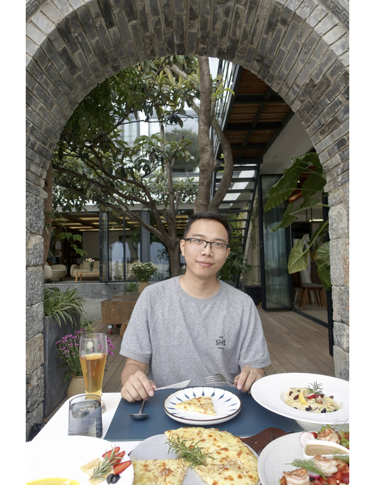

Assistant Professor
Tulane University
CS Ph.D.
University of California, Los Angeles
Contact:
Department of Computer Science
Tulane University
304 Paul Hall

I'm currently an Assistant Professor at Tulane University. Before that, I was an applied scientist at AWS identity. I earned my PhD in Computer Science Department at University of California, Los Angeles. I am designing testing and debug method for big data analytic and FPGA. I was a member of SOLAR group and co-advised by Professor Miryung Kim and Professor Harry Xu. Finished my defense! Check my defense slide if you are insterested slide
I joined the Department of Computer Science at Tulane University as an Assistant Professsor in the Fall 2025. I'm looking for students who want to work on Softwrae Engineering and Quantum Computing. Feel free to email me if you are insterested!
SE for Heterogeneous Computing CMPS-4662
2026 Spring
Quantum Computing CMPS-6660-01 & CMPS-4660-01
2025 Fall
Poster: Fuzz Testing of Quantum Program
By Jiyuan Wang, Fuchen Ma, Yu Jiang
14th IEEE Conference on Software Testing, Verification and Validation, ICST 2021, Best Poster
In this paper, we present QuanFuzz, a search-based test input generator for quantum program. We define the quantum sensitive information to evaluate test input for quantum program and use matrix generator to generate test cases with higher coverage. First, we extract quantum sensitive information -- measurement operations on those quantum registers and the sensitive branches associated with those measurement results, from the quantum source code. Then, we use the sensitive information guided algorithm to mutate the initial input matrix and select those matrices which improve the probability weight for a value of the quantum register to trigger the sensitive branch. The process keeps iterating until the sensitive branch triggered. We tested QuanFuzz on benchmarks and acquired 20% - 60% more coverage compared to traditional testing input generation.
arXiv (Oct 2018)
Reviewer for TOSEM 2025, TSE 2026
PC member of Student Forum - FMCAD 2025
Reviewer for IEEE Software 2024
Program Committee for FSE 25 Artifacts-trarck, ASE 26 Artifacts-trarck